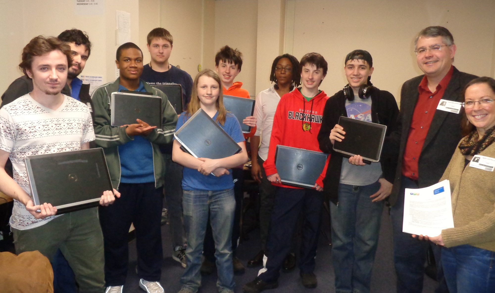
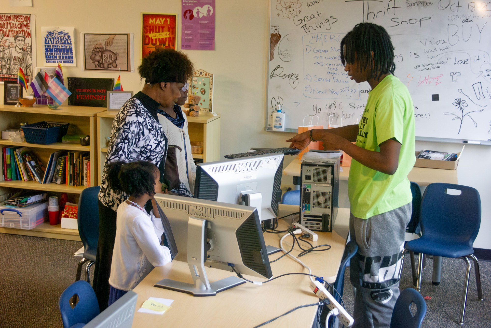
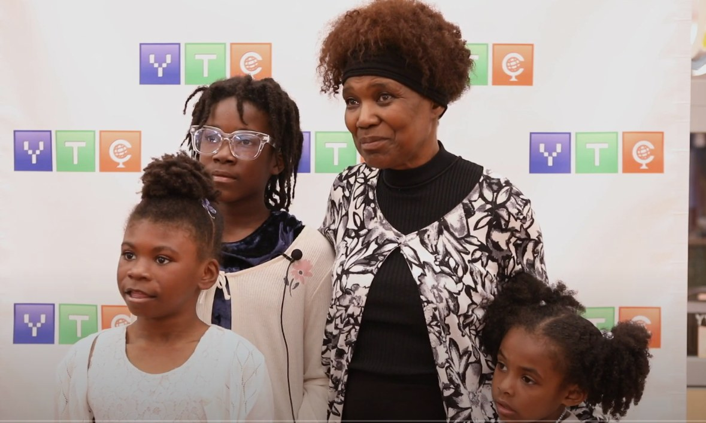
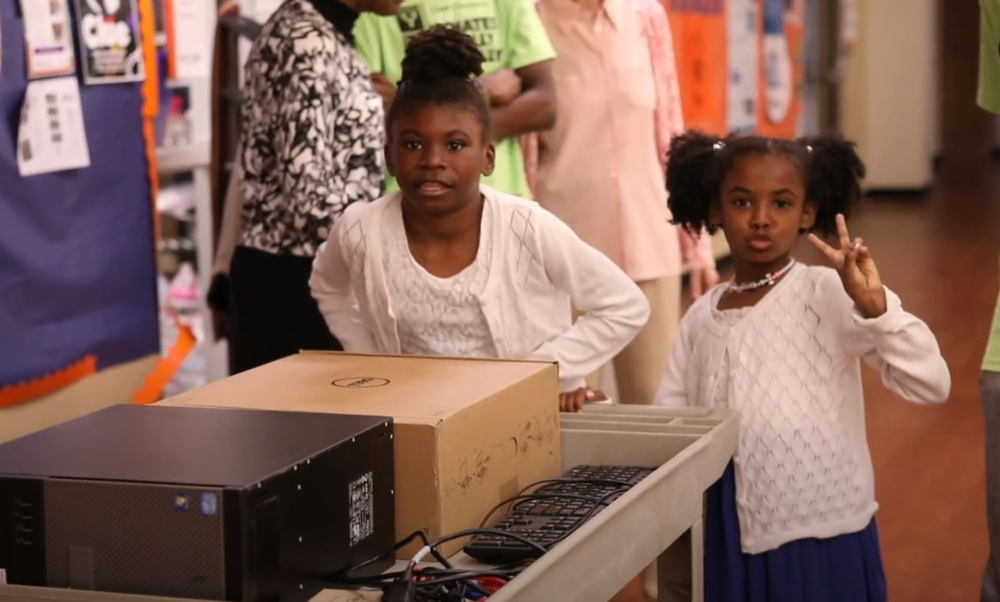
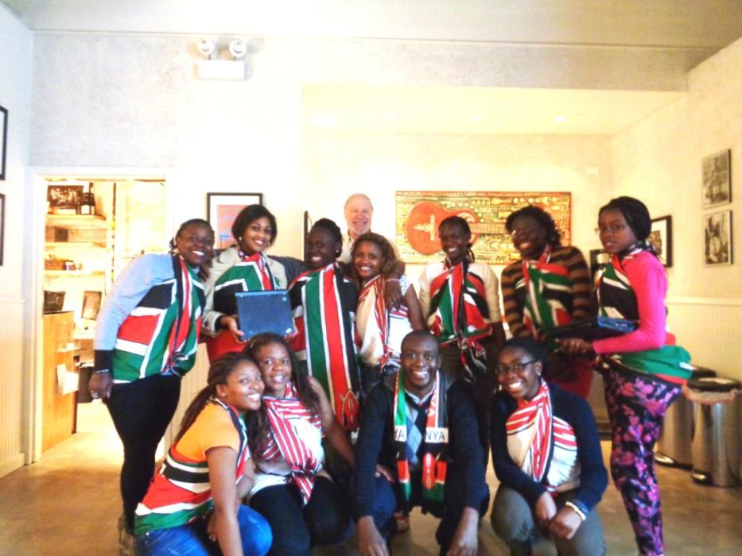
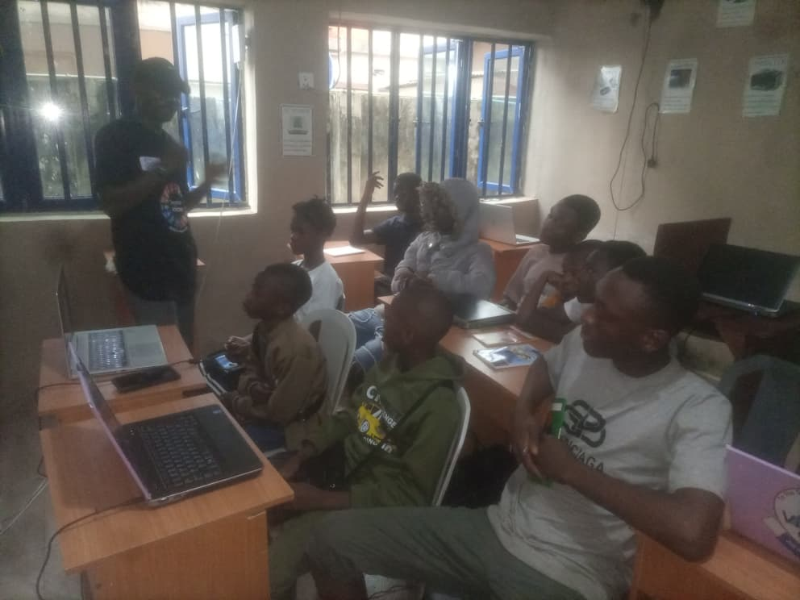
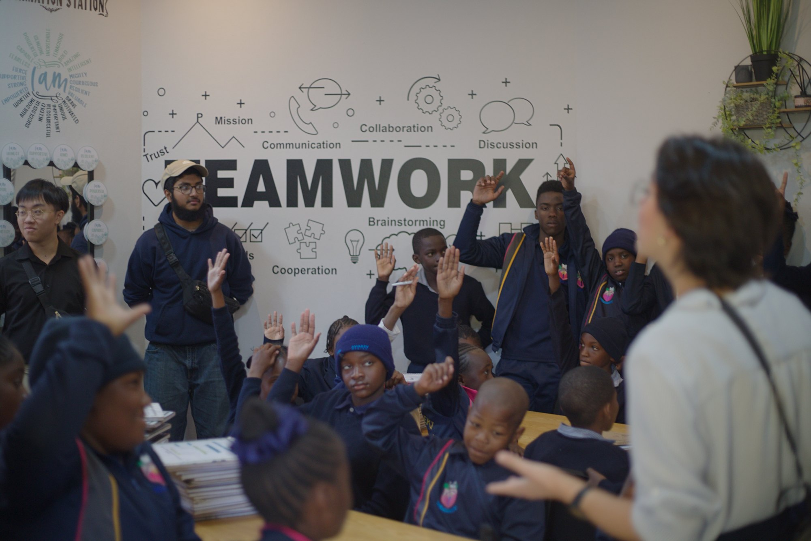
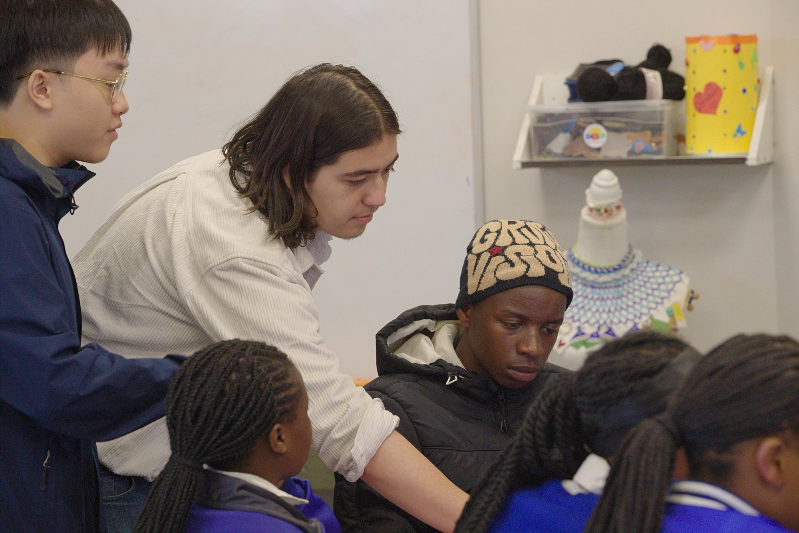
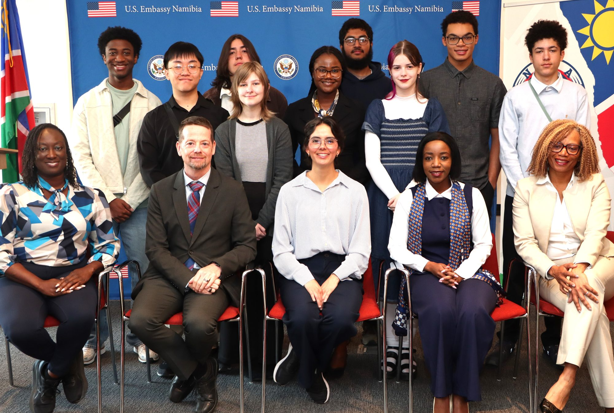
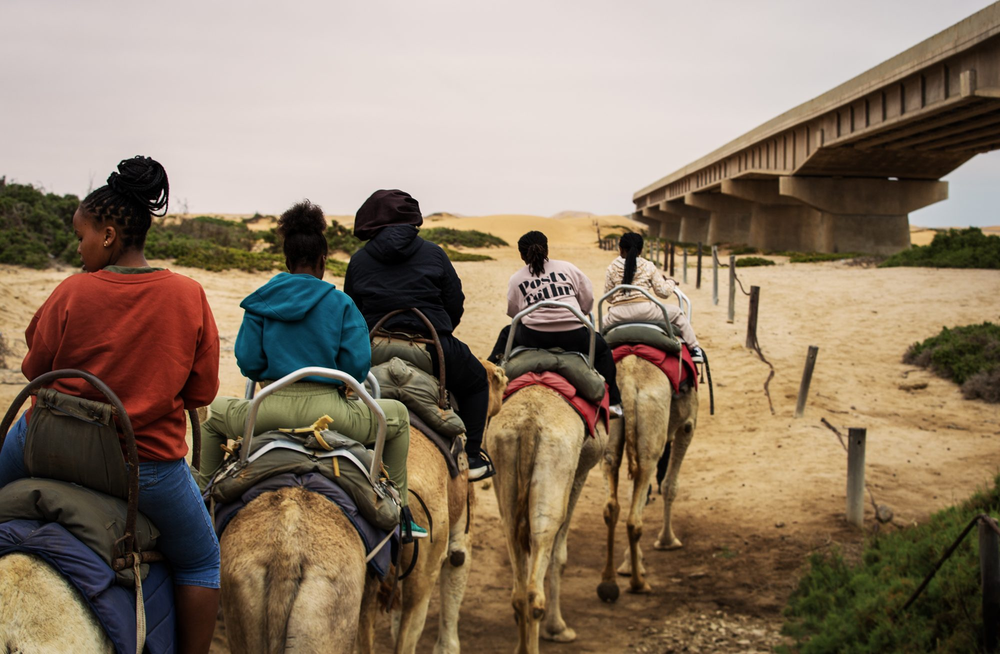

El Salvador
Eight laptops prepared in Evanston were readied for a partner connection in El Salvador.
A student learns at a bench, uses that knowledge for someone nearby, and eventually carries it farther. Follow the widening circle—from one clubroom to families, cities, countries and new generations of teachers.
THE LOCAL STORY
The work begins close to home: teaching younger students, helping older neighbors, rebuilding donated equipment and learning how to explain technology patiently to another person.


In Evanston, YTC students have supported senior residences, schools, community organizations, younger learners and families receiving computers. Each setting asks them to do more than know the answer—it asks them to share it.
YTC IN EVANSTON
Explore the schools, senior centers, community organizations, camps and partners reached through YTC students and the ETHS club.
Select a marker to see where the work happened and what YTC students contributed.
Open the full map ↗THE COMPUTER HANDOFF
The repair matters. So does what happens next: a student meets the person receiving the machine, explains it clearly, and turns technical work into a human connection.



During the spring of 2023, ETHS YTC students worked on more than 100 donated computers. At the Camp Kuumba handoff that June, 70 refurbished machines went to Evanston families.
Families chose a laptop or desktop, then sat with a YTC student who introduced the machine and walked them through using it. Information about low-cost internet service and neighborhood hotspots traveled with the computer.
Families were also invited into free Intro to Arduino classes, allowing a handoff to become a new learning relationship.
FROM THE YTC ARCHIVE
More than a decade earlier, Evanston YTC students were already refurbishing computers for community organizations.
YTC@ETHS IN NEW ORLEANS · SPRING 2016
Ten years after Katrina, families and young people were still being denied the technology access that wealthier communities took for granted. The ETHS team went to New Orleans because that unfinished recovery demanded more than sympathy—it demanded useful work.
Over one spring break, the ETHS delegation brought five laptops refurbished in Evanston, taught younger students, trained local adults, processed more than forty additional computers and established an ongoing video connection so the new sister clubs could continue calling on ETHS for help.


Chef and community organizer Amina DaDa connected YTC with Adinkra NOLA and Christian Unity Baptist Church. Local students were already using her home when they needed computer access. She helped ETHS students understand that unequal access was not merely a technology problem; it reinforced racial injustice.
The relationship moved both ways. One year later, Amina traveled to a YTC summer camp in Troy, Missouri, bringing New Orleans food, culture and hospitality to the wider YTC community.
Read how the ETHS partnership began ↗COMPUTERS CROSS BORDERS
Computers prepared in Evanston have moved through trusted partners to families, schools and youth programs farther away. Each machine carries the evidence of student work—and the possibility of another learner becoming a teacher.

Eight laptops prepared in Evanston were readied for a partner connection in El Salvador.

A laptop handoff through the Proswrites Foundation shows how local preparation can move through a wider community network.

International visitors and partners also bring experience back into Evanston, making the exchange move in both directions.
YTC students prepared thirteen laptops for Generations of Hope, an organization supporting orphaned and abandoned children as they build toward self-sufficiency through education, health care and community support. Earlier Evanston donations also reached Haiti through the Haitian Congress to Fortify Haiti and the Kizin Creole community.

A NEW LOCAL BEGINNING
After spending time with YTC students at ETHS through the Community Engagement Exchange, Olumide Kolawole returned home and began adapting the peer-led model for his own community.
At Victokev College, he has now introduced robotics and coding instruction with support from YTC’s technical team. It is a small beginning—and evidence that an experience in Evanston can become an opportunity somewhere else.
Ikorodu · Lagos State · NigeriaNAMIBIA · 2025
Five YTC members joined an eight-student ETHS delegation to Namibia, following years of refurbishing computers and building relationships from Evanston.
There, the familiar YTC exchange happened face to face: one student worked beside another, knowledge moved across the table, and the equipment became part of a shared experience.
For an ETHS student, the work is no longer an anonymous computer headed somewhere else. It belongs to people and places they can see, remember and continue learning from.





THE WHOLE STORY
A student learns something real, uses it for another person, and becomes responsible for carrying it forward. Evanston is not separate from the wider work. It is where the wider work begins.
KEEP THE CIRCLE MOVING
Equipment, mentors, community relationships and student opportunities all begin with a working Evanston clubroom.